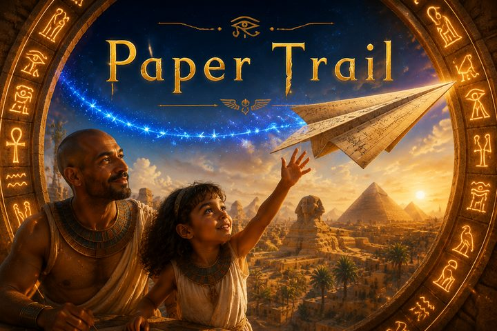
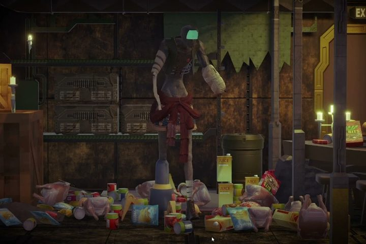
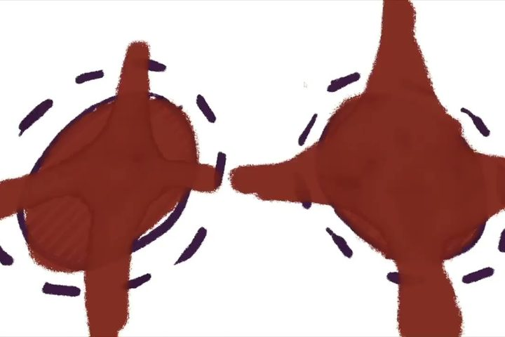
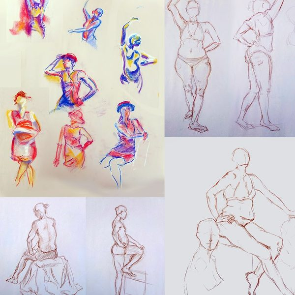

SELECTED WORKS
004—TOOL GALLERY
← BACK
Mini Tool Gallery
Hackathons, tools, and other fun things
2023–2026
A collection of mini tools or hackathon projects that I had done.

Paper TrailHackathon · 1st place, Worlds in Action 2026 Boba Trivia ShootoutAR hackathon · 1st place, Augg.io 2025
Wire DropGrasshopper plugin · 2026
Boba Trivia ShootoutAR hackathon · 1st place, Augg.io 2025
Wire DropGrasshopper plugin · 2026

Awakening3D game · 2023 Mt. ClympusSpeculative AI forum · 2023
Pillow Fight2D game · 2023
FigureFigure drawing